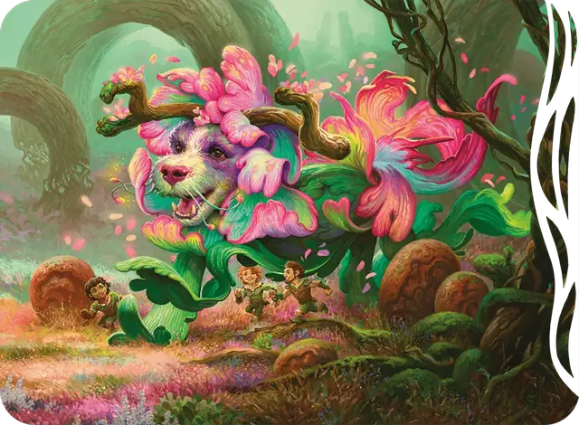

Воплощение яркости
Incarnation of Vibrance
Огромная Фея, Нейтральная

Класс Защиты 14 Инициатива +7 (17)
Хиты 230 (20к12 + 100)
Скорость 40 футов
| мод | спас | ||
|---|---|---|---|
| СИЛ | 20 | +5 | +5 |
| ЛОВ | 17 | +3 | +3 |
| ТЕЛ | 20 | +5 | +9 |
| мод | спас | ||
|---|---|---|---|
| ИНТ | 10 | +0 | +0 |
| МДР | 16 | +3 | +3 |
| ХАР | 21 | +5 | +9 |
Сопротивление урону Излучение
Иммунитеты Испуганный, Оглохший, Ослеплённый, Очарованный
Чувства Тёмное зрение 60 футов, пассивное Восприятие 13
Языки Сильван, Телепатия 120 фт.
Опасность 10 (5 900 опыта; БВ +4)
Особенности
Сопротивление магии. Воплощение совершает с Преимуществом спасброски от заклинаний и прочих магических эффектов.
Действия
Мультиатака. Воплощение совершает две атаки Лозой и использует Сияющий выброс. Оно может заменить одну из атак использованием Сотворения заклинаний (Глухота/слепота; если доступно).
Лоза. Бросок рукопашной атаки: +9, досягаемость 20 фт. Попадание: 18 (3к8 + 5) Дробящего урона. Если цель одного размера с воплощением или меньше, она Схвачена (Сл освобождение от захвата 15) одной из двух лоз.
Сияющий выброс. Спасбросок Телосложения: Сл 17, каждое существо по выбору воплощения в 20-футовой Эманации, исходящей от воплощения. Провал: 14 (2к8 + 5) урона Излучением. Успех: Только половина урона.
Сотворение заклинаний. Воплощение яркости сотворяет одно из следующих заклинаний, не нуждаясь в компонентах заклинания (заклинательная характеристика — Харизма):
Неограниченно: Дневной свет, Искусство друидов, Рост растений
1/день: Глухота/слепота
Бонусные действия
Перевоплощение. Воплощение меняет свой размер на Средний, Большой или Огромный.
Телепортация. Воплощение телепортируется в видимое им в пределах 60 футов незанятое пространство. Воплощение не может телепортироваться, если держит существо Схваченным.
Бонус мастерства +4
Среда обитания Страна фей
Сокровища Отсутствуют
Воплощения природы
Первозданные проявления природы
Воплощения природы олицетворяют собой отвлечённые понятия — любопытство, облегчение или ужас. Они лежат за гранью понимания большинства смертных: неукротимые, первозданные и внушающие трепет.
В мире Лорвин-Шэдоумур эти сущности принимают облик химерических чудовищ, сочетающих черты трёх и более существ. В Лорвине воплощения природы чаще несут в себе положительные и окрыляющие чувства. В Шэдоумуре они обыкновенно проявляют мрачные, жестокие порывы.
Воплощение природы, перекочевавшее из Лорвина в Шэдоумур или наоборот, сохраняет свою внутреннюю суть, но может перемениться внешне. Например, воплощение надежды в Лорвине может напоминать гигантского голубя с хвостом ящерицы и львиными ногами, а в Шэдоумуре то же самое существо обернётся огромной вороной с хвостом гремучей змеи и львиными лапами, запятнанными кровью.
Каждое воплощение яркости похоже на исполинского пса с телом из пёстрой листвы и рогами, подобными ветвям цветущей вишни. Когда воплощения яркости находятся в Лорвине, луга расцветают и поля наливаются спелостью от одного их присутствия, а киткины радуются, если подобное существо навещает их клахан. В Шэдоумуре те же самые создания служат дурным предзнаменованием: это чудовищные гончие, которых часто сопровождают настырные плотоядные растения и стаи обезумевших диких зверей.